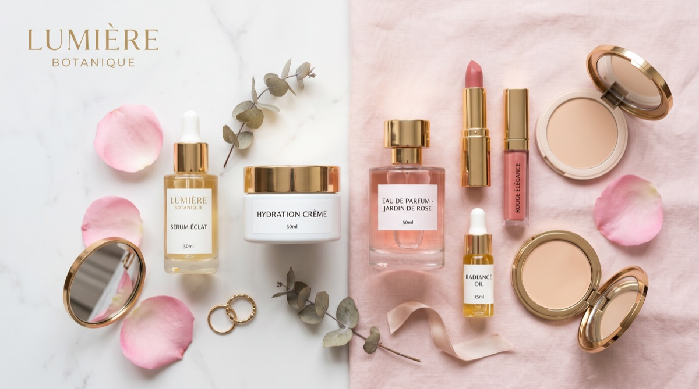
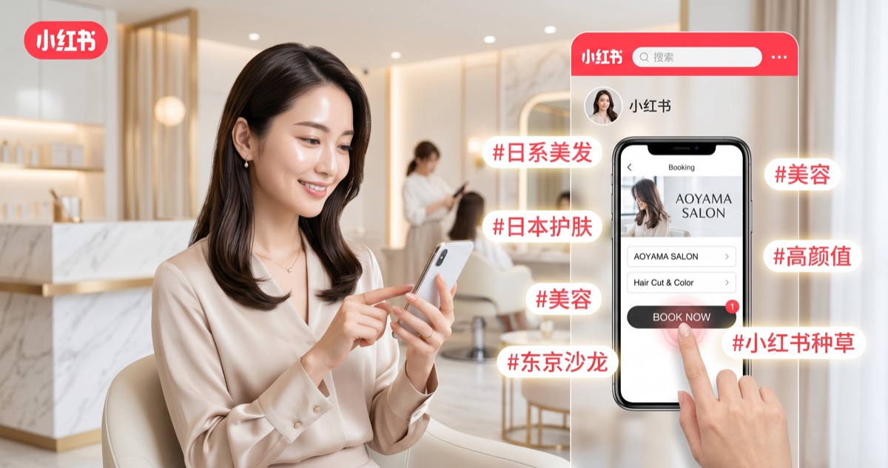

Beauty Salon Inbound Marketing
美容サロンの技術を、訪日中国人の予約につなげる。
小紅書でビフォーアフターと体験価値を可視化し、KOC招待で信頼を作り、中国語の予約導線まで整える。PROTECHは美容サロンの中国インバウンド集客を実務まで支援します。
Challenges
美容サロンは、施術前に信頼される情報設計が必要です。
訪日中国人が美容サロンを選ぶ時は、仕上がり、衛生面、価格、言語対応、予約方法を細かく確認します。小紅書上で不安が解消されていないと予約には進みません。
日本の技術力が高くても、ビフォーアフターや施術工程が整理されていないと検索で比較されにくくなります。
施術前後、工程、使用商材、所要時間、似合うスタイルを小紅書投稿で体系化します。
価格、所要時間、予約方法、キャンセル、支払い、言語対応が分からないと、興味があっても離脱します。
メニュー表、中国語FAQ、予約フォーム、来店方法、注意事項を投稿とLPに接続します。
美容は第三者レビューの影響が大きい領域です。KOC体験投稿を継続的に作る必要があります。
美容・旅行系KOCの体験投稿で、仕上がり、接客、価格感、アクセスを可視化します。
Beauty Booking Blueprint
美容サロンは、仕上がりと予約不安を同時に見せる必要があります。

Growth Design
美容サロンの予約導線を、投稿から来店まで設計します。
ヘア、ネイル、エステの変化を中国語キーワードと組み合わせ、小紅書で保存される投稿にします。
Before/After、施術工程、価格、所要時間を同じ投稿内で整理し、比較されやすくします。
KOC美容・旅行系KOCを招待し、施術体験、接客、価格感、予約方法を第三者視点で発信します。
広告感を抑え、実際に来店する前の不安をレビューで解消します。
Bookingメニュー、所要時間、注意事項、予約フォーム、来店方法を中国語で整え、スタッフ負担を抑えます。
予約時の定型文と注意事項を整備し、言語対応スタッフが少ない店舗でも開始しやすくします。

Related Route
美容サロン向けの関連導線
美容領域は投稿設計、KOC、予約導線をセットで見ると成果につながりやすくなります。
FAQ
美容サロンの中国インバウンド集客 FAQ
美容サロンは小紅書でどんな投稿が効果的ですか？
⌄ビフォーアフター、施術工程、使用商材、価格、所要時間、予約方法、サロンまでの行き方を組み合わせた投稿が保存されやすいです。
中国語対応スタッフがいなくても始められますか？
⌄可能です。予約時の定型文、施術メニュー、注意事項、来店導線を中国語で整備すれば、スタッフ負担を抑えて開始できます。
美容サロンはKOC招待と相性が良いですか？
⌄相性が良い業種です。施術体験は写真・動画で変化が伝わりやすく、口コミを作りやすい領域です。